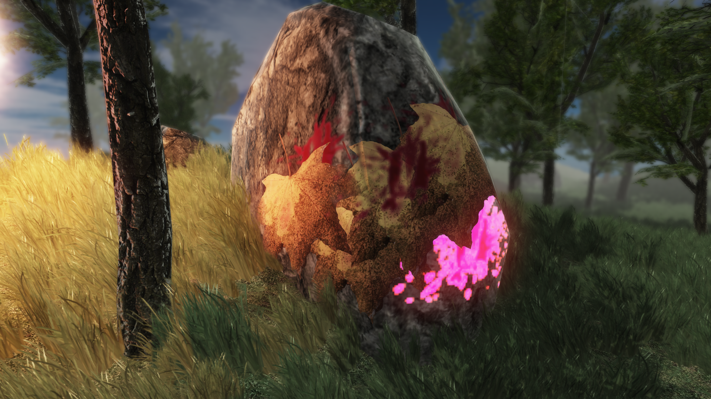
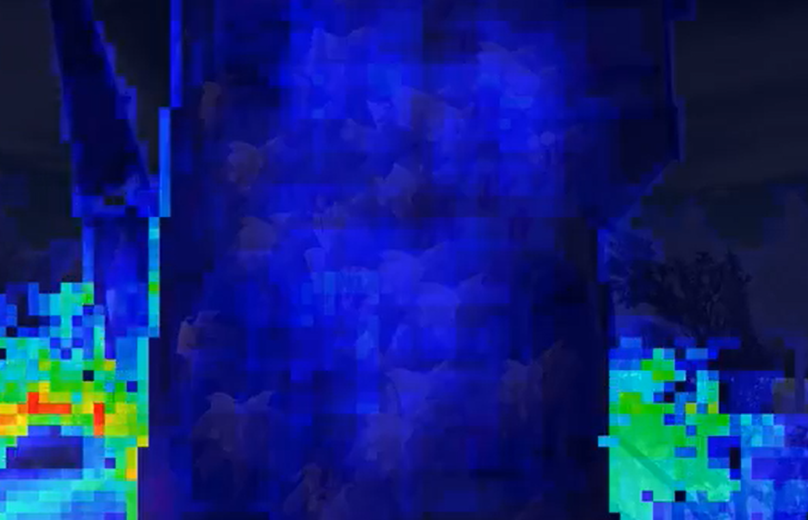

Forward+ decal rendering

Drawing decals in deferred renderers is quite simple, straight forward and efficient: Just render boxes like you render the lights, read the gbuffer in the pixel shader, project onto the surface, then sample and blend the decal texture. The light evaluation then already computes lighting for the decaled surfaces. In traditional forward rendering pipelines, this is not so trivial. It is usually done by cutting out geometry under the decal, creating a new mesh from it with projected texture coordinates and render it for all lights, additively. Apart from the obvious increased draw call count and fillrate consumption, there is even potential for z-fighting artifacts. While moving to tile-based forward rendering (Forward+), we can surely think of something more high-tech.We want to avoid additional geometry creation, increased draw call count while keeping the lighting computation constant. But in addition to these, with this new technique we can even trivially support modification of surface properties, creating decals which can modify surface normal, roughness, metalness, emissive, etc. or even do parallax occlusion mapping. We can even apply decals to transparent surfaces easily! This article will describe the outline of the technique without source code. You can look at my implementation however, here: culling, and sorting shader; blending evaluation shader.
In forward+ we have a light culling step and a light evaluation separately. The decals will be inserted for both passes. A culling compute shader iterates through a global light array and decides for each screen space tile, which lights are inside and adds them to a global list (in case of tiled deferred, it just adds them to a local list and evaluates lighting there and then). For adding decals to the culling, we need to extend the light descriptor structure to be able to hold decal information, and add functions to the shader to be able to cull oriented bounding boxes(OBBs). We can implement OBB culling by doing coarse AABB tests. Transform the AABB of the tile by the decal OBB’s inverse matrix (while keeping min-max up to date) and test the resulting AABB against a unit AABB. This is achieved by determining the 8 corner points of the tile AABB, transforming each by the inverse decal OBB, then determining the min and max corner points of the resulting points.

Rendering the decals takes place in the object shaders while we also evaluate the lighting. If the decals can modify surface parameters, like normals, it is essential that we render the decals before the lights. For that, we must have a sorted decal list. We can not avoid sorting the decals, anyway, as I have found out the hard way. Because the culling is performed in parallel, the decals can be added to the tile in arbitrary order. But we have a strict order when blending the decals, that is the order we have placed them onto the surface. If we don’t sort, it can lead to severe flickering artifacts when there are overlapping decals. Thankfully the sorting is straight forward, easily parallellized and can be done in the LDS (Local Data Share memory) entirely. I have gotten this piece of code from an AMD presentation (a bitonic sort implementation in LDS).
The easiest way is that we sort the decals in the CS so that the bottom decal is first, and the top is last (bottom-to-top sorting). This way, we can do regular alpha blending (which is a simple lerp in the shader) easily. Though we can do better. This way we sample all of the decals, even if the bottom ones are completely covered by decals placed on top. Instead we should sort the opposite way, so that first we evaluate the top ones, and then the decals underneath but just until the alpha accumulation reaches one. We can skip the rest. The blending equation also needs to be modified for this. The same idea is presented in the above mentioned AMD presentation for tile based particle systems. The modified blending equation looks like this:
color = ( invDestA x srcA x srcCol ) + destCol
alpha = srcA + ( invSrcA x destA )This method can save us much rendering time when multiple decals are overlapping. But this can result in different output when we have emissive decals for example. In the bottom-to-top blending, emissive decals will always be visible because the contribution is added to the light buffer, but the top-to-bottom sorting (and skip) algorithm will skip the decals which are completely covered. I think this is “better” behaviour overall but on a subjective basis of course.
The nice thing about this technique, is that we can trivially modify surface properties, if we just sample all of our decals before all of the lights. Take this for example: we want to modify normal of the surface with the decal normal map. We already have our normal vector in our object shader, so when we get to the decals, just blend it in shader code with the decal normal texture, without the need for any packing/unpacking and tricky blending of g-buffers (a’la deferred). The light evaluation which comes after it “just works” with the new surface normal without any modification at all.
Maybe you have noticed, that we need to do the decal evaluation in dynamically branching code, which means that we must leave the default mip-mapping support. This is because from the compiler’s standpoint, we might perfectly well not be evaluating the same decals in neighbouring pixels, but we need those helper pixels for correct screen space derivative coordinates. In our case when we have multiple of two pixel count tiles (I am using 16×16 tiles), we are being coherent for our helper pixels, but the compiler doesn’t know that unfortunately. I haven’t yet found a satisfying way to overcome this problem. I experimented with linear distance/screen space size based mip selection, but found them unsatisfying for my purposes (they might be ok for a single game/camera type though).
Update: Thanks to MJP, I learned a new technique for obtaining nice mip mapping results: We just need to take the derivatives of the surface world position, transform it by the decal projection matrix (but leave the translation), and we have the decal derivatives that we can feed into Texture2D::SampleGrad for example. An additional note is that when using a texture atlas for the decals, we need to take into consideration the atlas texture coordinate transformation. So, just multiply the decal derivatives by the atlas transformation’s scaling part. Cool technique!
We also need to somehow dynamically support different decal textures in the same object shader. A texture atlas comes handy in this case, or bindless textures are also an option in newer APIs.
As we have added decal support to the tiled light array structure, the structure probably is getting bloated, which means less cache efficient, because most lights probably don’t need a decal inverse matrix (for projection), texture atlas offsets, etc. For this, the decals could probably get their own structure and a different array, or just tightly pack everything in a raw buffer (byteaddressbuffer in DX11). I need to experiment with this.
Conclusion:
This technique is a clear upgrade from the traditional forward rendered decals, but comparing it with the deferred decals is not a trivial matter. First, we can certainly optimize deferred decals in several ways. I have been already toying with the idea of using Rasterizer Ordered Views to optimize the blending in a similar way, and eliminating overdraw. Secondly, we have increased branching and register pressure in the forward rendering pass, while rasterization of deferred decals is a much more light weight shader which can be better parallellized when the overdraw is not so apparent. In that case, we can get away with rendering much more deferred decals than tiled decals. The tile-based approach gets much better with increased overdraw because of the “skip the occluded” behaviour as well as the reduced bandwidth cost of not having to sample a G-buffer for each decal. Forgive me for not providing actual profiling data at the moment, this article intends to be merely a brain dump, but I also hope somewhat inspirational.